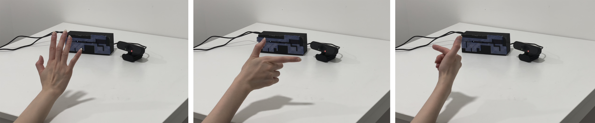
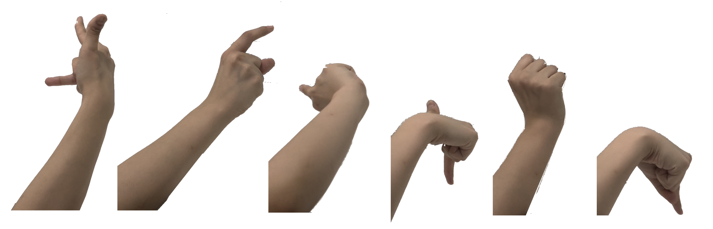

HandleMe is an interactive installation that allows to control your life with your fingers. I want to illustrate the conflicting link between personal freedom and the unpredictability of external factors in a funny way. Through their fingers, the viewer controls the life and actions of 'I' in the flat. While exercising and entertaining rights, I hope to make viewers consider the relationship between rights and individuals.

Interactive Guidence
I invited a friend to examine my artwork, and her reaction was exactly what I expected: she was dissatisfied with having control over her present behaviors. She envisioned discovering the bounds of power through a variety of hand postures. But, she cannot. AHHHH.
